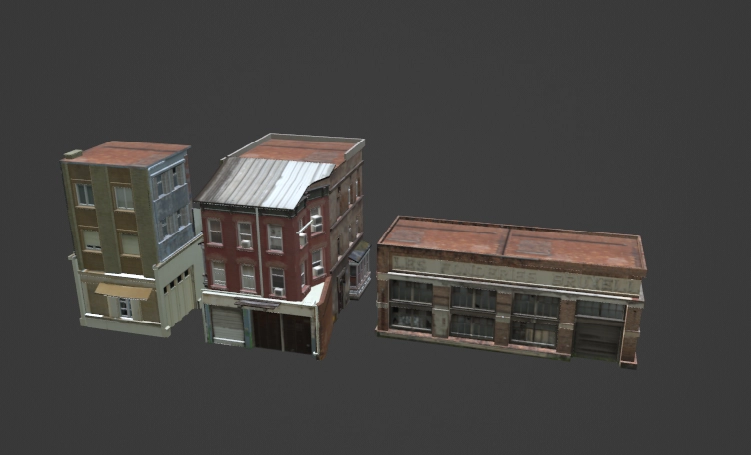
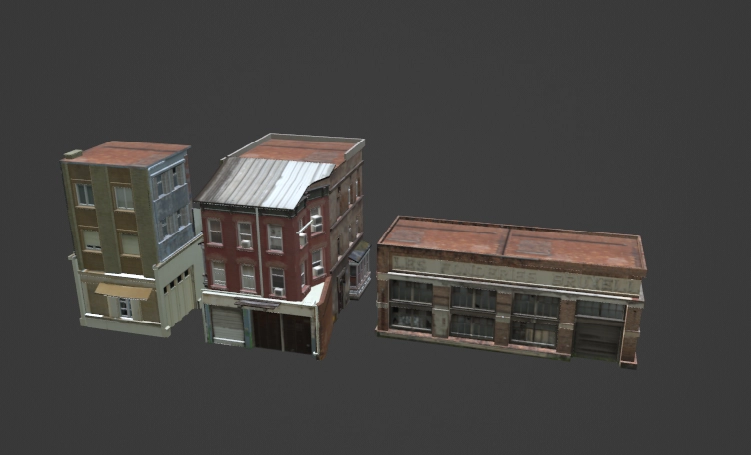

Prototypes Art
Pirates
Turn based combat game based on the art of Boris Groh. I was tasked with developing the environment to go around painted 2d characters.
Initially I had wanted each fight scene to take place on different parts of a ship so that the camera could move smoothly from room to room and show the progression as you get closer to a boss etc. But due to technical limitations and scope concerns this idea was scrapped in favour of each room being a seperate scene. By this point I already had the skeleton of a ship blocked out so I split out parts of it to use as the basis for different scenes. Splitting up the scenes was definitly the right choice though as it would would have been quite challenging to fit everything in the enclosed spaces under the deck for example. By not being constrained to fit everything into the realistic proportions of a ship meant I could exaggerate the size of things much further when needed which ultimately led to a much nicer composition.

Initial Blockout


During the ship development I learnt alot about how they work and the different parts at some point I would like to return to making a full 3d boat, perhaps in a more realistic style.
I tried out some different techniques for making the lighting look more painterly to match the 2d characters, but found they were often more distracting then the more realistic lighting and didn't allow for animation. I still tried to capture some of the painted look in the texturing but it was probably too subtle.


Props used a very standard trim workflow, but the actual architecural bits were created as a single piece in the modelling software and imported as one mesh, once the camera was aligned to match the game I could quickly block out the walls and any additional geometry much faster than if it had been constructed from modular pieces in engine, and allowed the backgrounds to have a wider range of shapes, wood carvings etc.


Overall I was pretty happy with how the final scenes turned out both through lighting and composition, however my lack of painting ability definitly held them back from looking as good as possible. Luckily there were other artists on the team who were able to help out with the more detailed textures, like the paintings and stained glass window but I still feel like the textures removed a lot of the appeal from the final prototype.


Collage
I got these images from the art director, which set the tone for the project a 3d brawler set in a sprawling city with art insipred by collage and graffiti art. I was responisble for developing the many buildings needed to fill out a city.


 

Plants